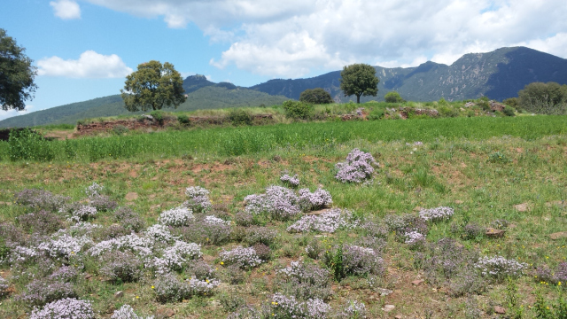

Menjar
Elaborem els àpats amb receptes senzilles i saludables, donant el major protagonisme als sabors originals que ens donen els productes d’excepcional qualitat que disposem: “una bona verdura”, “un bon pa amb tomàquet”, “un bon arròs amb verdures”,“unes bones llegums”, “unes bones

gf
Menjar
Elaborem els àpats amb receptes senzilles i saludables, donant el major protagonisme als sabors originals que ens donen els productes d’excepcional qualitat que disposem: “una bona verdura”, “un bon pa amb tomàquet”, “un bon arròs amb verdures”,“unes bones llegums”, “unes bones